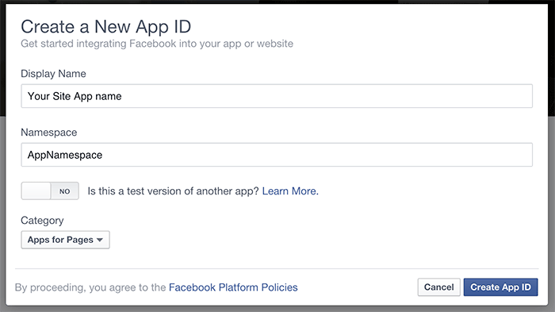
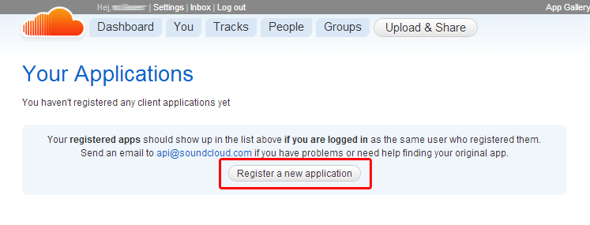
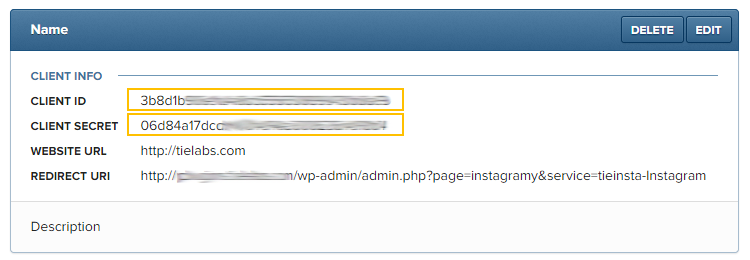
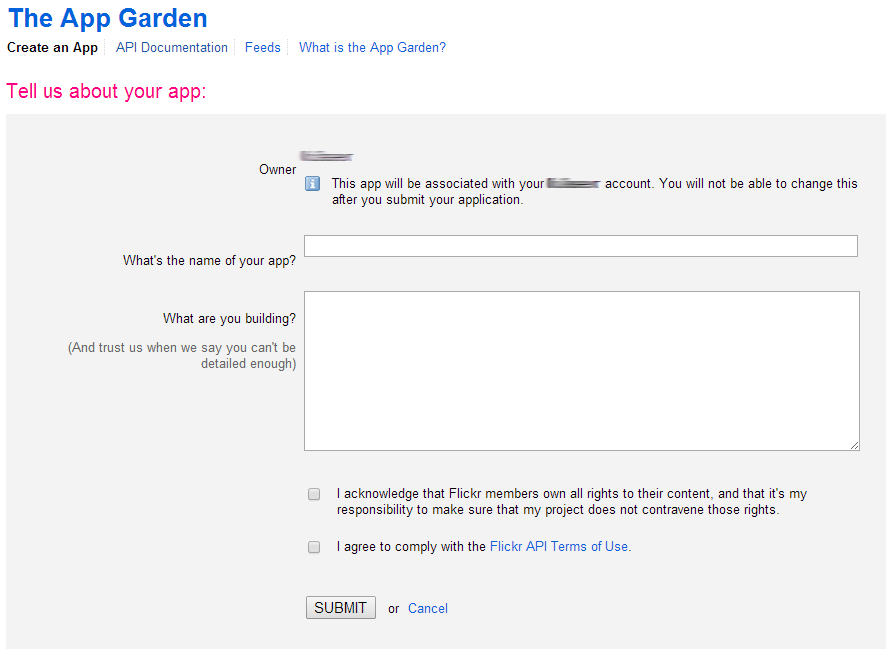
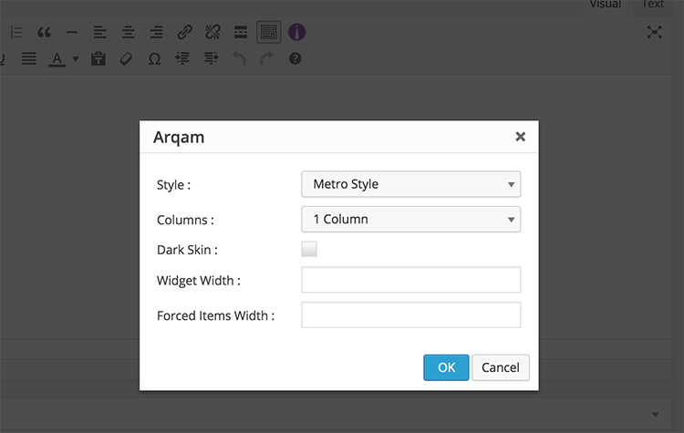

Check These Links For How to Install Arqam Plugin .
From Arqam settings page you can set the social accounts info , Cache time and change the order of Social icons .
Getting Your Facebook page Name/ID ?
If Your page Link is somthing like http://www.facebook.com/tielabs the page name will be tielabs
If Your page Link is somthing like http://www.facebook.com/pages/Anasheed/153555808028282 the page ID will be 153555808028282
Register a new App :
- Go To FaceBook Developers page .
- From My Apps menu Select Add a New App.
- From the Add a New App pop up window choose Website.
- Click on Skip and Create App ID button.
- Enter Display Name, Namespace and choose a category for the App.

- Complete the Security Check.
- Click on Show button to display the App Secret.

- Back to the "Arqam Settings" page and Click on Get Access Token link in the end of the FaceBook Box.
- Enter the App ID and App Secret in the FaceBook App info box and click Submit .
- It will redirect you back to the Arqam Settings page .. now the Access Token Key containing a code .
How can I get my Google+ ID?
You need to get your Google+ page or profile ID. If Your page Link is somthing like http://plus.google.com/+psdtuts/ the ID will be +psdtuts , if Your page Link is somthing like http://plus.google.com/106192958286631454676 the ID will be 106192958286631454676
How can I get my Google API Key ?
- Create a project/app in https://console.developers.google.com/project
- Inside your project go to APIs & auth > APIs and turn on the Google+ API
- Go to APIs & auth > APIs > Credentials > Public API access and click in the CREATE A NEW KEY button.
- Select the Browser key option and click on the CREATE button
- After you're done, Copy your API key and paste it in Google Api Key field in Google+ box at WordPress Admin > Arqam
- Login to Twitter, and go to: https://dev.twitter.com/apps
- Create new application
- Fill in the form fields and create your app
- After you're done, you'll need to put the Consumer key and the Consumer secret to Arqam at WordPress Admin > Arqam > Twitter box
How can I get my Youtube API Key ?
- Create a project/app in https://console.developers.google.com/project
- Inside your project go to APIs & auth > APIs and turn on the YouTube Data API
- Go to APIs & auth > APIs > Credentials > Public API access and click in the CREATE A NEW KEY button.
- Select the Browser key option and click on the CREATE button
- After you're done, Copy your API key and paste it in Youtube Api Key field in Youtube box at WordPress Admin > Arqam
To Setup SoundCloud you need to get an API Key
- Go To Your Applications page .
- Click On "Register a new application" Button .

- Enter Your App Name and click on "Register".

- Check "Yes, I have read and accepted the Developer Policies" and Click on "Save App" Button
- Copy the "Client ID" and Go To "Arqam Settings page" and paste it in "API Key" input field in the SoundCloud Box.
To Setup Behance you need to get an API Key
- Go To Manage Your ApplicationsRegister a New App page .
- Click On "Register a new App" Button .
- Enter Your App Name, Your Blog URL and Description . Then click on "Register Your App".
- Copy the "API KEY / CLIENT ID" and Go To "Arqam Settings page" and paste it in "API Key" input field in the Behance Box.

-
Make sure you are logged into Instagram.com and then visit http://instagram.com/developer.
-
Click on the "Manage Clients" link, as shown below.
If this is the first time you are adding an app or plugin, Instagram will ask you a few questions. You can enter these responses, click "Sign Up", and then click "Manage Clients" again:
- Your website:
- Enter your website url
- Phone number:
- Enter your phone number
- What do you want to build with the API?
- A plugin for my WordPress website.
-
Register your WordPress site by click the "Register a New Client" button.
-
Fill in the "Register new OAuth Client" form with the following infomation and click "Register":
- Application name
- Enter the name of your WordPress website
- Description
- Instagram App for Arqam WordPress plugin
- Website
- Enter your website url
- OAuth redirect_url ( Change Your-Blog-URL with your WordPress Blog URL )
- Your-Blog-URL/wp-admin/admin.php?page=arqam&service=arq-Instagram

-
- Copy the Client ID and Client Secret .

- Go to Arqam options page > Instagram block and click on Get Access Token button.
- Fill the Instagram App info form and click on Submit button.

- It will redirect you to Instagram Authorization Request page .. Enter your Email and password and click on Authorize button.

-
Make sure you are logged into Foursquare.com and then visit https://developer.foursquare.com.
- Click on the "My Apps" link, as shown below.
- Click on the "Create a new app" link, as shown below.
-
Fill in the "Register new App" form with the following infomation and click "Save Changes":
- Your app name
- Enter the name of your WordPress website
- Download / welcome page url
- Enter the URL of your website
- Your privacy policy url
- Enter the URL of your website
- Redirect URI(s) **This must be copied exactly as shown below**
- Your-Blog-URL/wp-admin/admin.php?page=arqam&service=arq-foursquare
-
- Copy the Client ID and Client Secret .
- Go to Arqam options page > Foursquare block and click on Get Access Token button.
- Fill the Foursquare App info form and click on Submit button.
- It will redirect you to Foursquare Authorization Request page .. Login and click on Allow button.
-
Make sure you are logged into Twitch.tv and then visit https://www.twitch.tv/settings/connections.
- Click on the "Register your application" button.
-
Fill in the "Register your Application" form with the following infomation and click "Save Changes":
- Name
- Enter the name of your WordPress website
- Application Category
- Website Integration
- Redirect URI(s) **This must be copied exactly as shown below**
- Your-Blog-URL/wp-admin/admin.php?page=arqam&service=arq-twitch
-
- Click on the New Secret button.
- Copy the Client ID and Client Secret.
- Go to Arqam options page > Twitch block and click on Get Access Token button.
- Fill the Twitch App info form and click on Submit button.
- It will redirect you to Twitch Authorization Request page, Login and click on Authorize button.
Getting Your Blog Hostname :
Each blog has a unique hostname. The hostname can be standard or custom.
Register a new App :
- Go To Applications page .
- Click on + Register application button .
- Fill out the form :
- Application name: (requried) enter any name for the Application .
- Application website: (optional) enter your site URL
- App Store URL: (optional) Keep it blank .
- Google Play Store URL: (optional) Keep it blank .
- Application description: (optional) Keep it blank .
- Administrative contact email: (requried) enter your email .
- Default callback URL: (requried) enter your site URL .
- Click on Register Button .
- From Applications page Copy the OAuth Consumer Key and Secret Key of your APP .
- Back to the "Arqam Settings" page and Click on Get the required info button in the end of the Tumblr Box.
- Enter the OAuth Consumer Key and Secret Key in the Tumblr App info box and click Submit .
- It will redirect you to Tumblr Allow Access page .. click on Allow button .
Register a new App :
- Go To Applications page .
- Click on Register your application button .
- Fill out the form :
- Application name: (requried) enter any name for the Application .
- Description: (requried) enter a description for the app .
- Application URL: (requried) enter your site URL .
- Callback URL: (optional) enter your site URL .
- JavaScript SDK Callback URL: (optional) Keep it blank .
- Support URL: (optional) Keep it blank .
- Developer's Email: (requried) enter your email .
- Check the "I accept the 500px API Terms of Use" checkbox .
- Click on Register Button .
- From the Applications page Copy the Consumer Key and Consumer Secret of your APP .
- Back to the "Arqam Settings" page and Click on Get the required info button in the end of the 500px Box.
- Enter the Consumer Key and Secret Key in the 500px App info box and click Submit .
- It will redirect you to 500px Authorize page .. click on Authorize button .
Register a new App:
- Go To My Applications page.
- Click on Create Application button.
- Fill out the form :
- Company name: Choose a company or add add a new company.
- Name: enter any name for the Application.
- Description: enter a description for the Application.
- Application Logo: Upload a logo for the Application.
- Application Use: Select "Other".
- Website URL: enter your site URL.
- Bussiness Email: Enter Your Email.
- Bussiness Phone: Enter Your Phone Number.
- Terms of Service: Check the "Agree" checkbox.
- Click on Submit Button.
- After adding the Application you will be redirected to the Authentication page.
- Check all Application Permissions.
- in the OAuth 2.0 Redirect URLs: enter http://Your-Blog-URL/wp-admin/admin.php?page=arqam&service=arq-linkedin replace "Your-Blog-URL" with your Blog URL, then click the Add Button.
- Click Update Button.
- Copy the Client ID and Client Secret keys.
- Back to the "Arqam Settings" page and Click on Get Access Token button in the end of the Linkedin Box.
- Enter the strong>Client ID and Client Secret in the LinkedIn App info box and click Submit .
- It will redirect you to Linkedin Allow Access page .. enter your Email and password and click on Allow Access button.
- It will redirect you back to the Arqam Settings page .. now the Access Token Key containing a code .
How to find your Linkedin company ID?
- Open LinkedIn in a new tab.
- Search for your company page in LinkedIn.
- In your search results, select your company page.
- Navigate to the URL at the top of your company page.
- Copy the number immediately following 'www.linkedin.com/company/' but before the question mark.
Getting Your Group ID :
- Use idGettr to get the id of the Flickr group , it will be something like 12345458294@N20
Register a new App :
- Go To Create App page .
- Click on APPLY FOR A NON-COMMERCIAL KEY button .
- Fill out the form :

- What's the name of your app? enter any name for the Application .
- What are you building? enter a description for the app .
- Check the "What are you building?...." checkbox .
- Check the "I agree to comply with the Flickr API Terms of Use." checkbox .
- Click on Register Button .
- From the Applications page Copy the Key of your APP .
- Back to the "Arqam Settings" page and paste it in "API Key" input field in the Flickr Box
Getting Your Group Slug :
If Your Group Link is somthing like http://steamcommunity.com/groups/tielabs the group slug will be tielabs
- Go To Dribbble Register Application page .
- Fill in the form fields and create your app
- After you're done, copy the Client Access Token and paste it in the Access Token Key field > Arqam > Dribbble box
- Go To Create App page .
- Fill out the form :
- Application name enter any name for the Application.
- Company name enter your company name.
- Check the "I agree thr Goodreads developer terms of service as shown below" checkbox .
- Click on Apply for a Developer Key Button .
- Copy the Api Key of your APP .
- Back to the "Arqam Settings" page and paste it in "API Key" input field in the Goodreads Box
Getting Your Feedpress Json file URL
- Login to feedpress.it .
- Go to your Feeds page .

- Click on Admin button in your feed box .
- In the feed page choose JSON file from the Miscellaneous :
- Copy the JSON file link and paste it in "Feedpress Json file URL" input field in the RSS Box .
To Display "Arqam - Social Counter" in your sidebar
- Go to Appearance > Widgets.
- Choose "Arqam - Social Counter" and drag it to the sidebar where you wish it to appear.
- Change the widget's options as you wish .
To add "Arqam - Social Counter" to your post or page
- Click on Arqam shortcode icon.
- Change the options as you wish .
